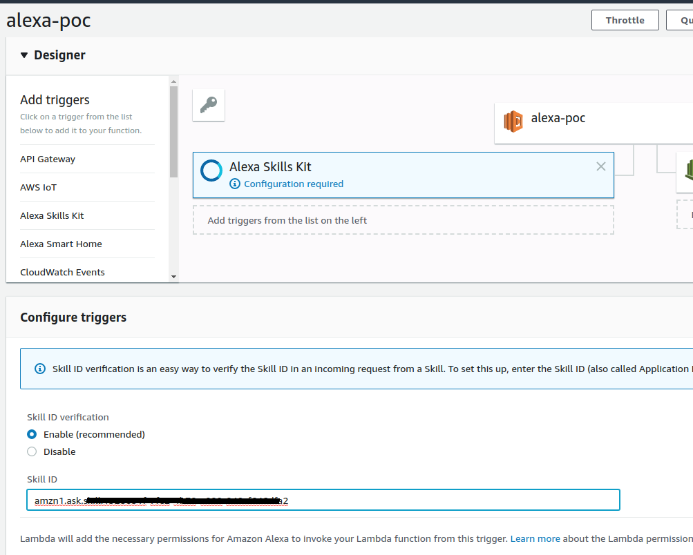

Introduction
When developing a custom Alexa skill, if your role is developer üíª and also devops ‚öôÔ∏è for your Alexa Skill, then you‚Äôll have full permissions. So, in order to automatize the deployment of your custom Alexa Skill, you‚Äôll probably end up using ask-cli client tool, specifically the command ask deploy which creates a new AWS Lambda function named ask-<skillType>-<skillName>-<profile> (with the appropriate type, name, and profile for <skillType>, <skillName>, profile). The AWS Lambda function is created with an IAM role named ask-lambda-<skill name>-<profile>, attached to the basic execution policy.
However, if you are a developer üíª and you rely on devops ‚öôÔ∏è to create your AWS resources, you‚Äôll probably ask them to create new lambda function and role to start working with our custom Alexa Skill. And probably, the name of the lambda role and function are different than what ask-cli is using and expecting by default.
This post is to explain in detail how to automatically deploy a custom Alexa Skill which uses an already created lambda function and role with a different names than the default ones.
Create and Deploy Custom Alexa Skill
Before continue, If not familiar with custom Alexa Skill, I recommend to quick read an article I wrote about main concepts, requirements, project structure and code samples for custom Alexa Skills.
I’m going to use City Guide official code sample as a baseline or boilerplate for this post. In that code sample, there is a complete guide about how to create and deploy a custom skill but not in a automatic way. We are going to show how to automatically deploy using
ask-cli.
Create new Skill using code sample
Double check you have installed ASK CLI
1
ask
Initialize credentials profile We have to configure credentials to access Alexa Skills Kit Developer Console and AWS Console.
1
ask init
- Select
Create a new profileand enter a name - Select
defaultas a AWS Profile to deploy Lambda function, then you will be redirected to browser to log in in AWS and cache your credentials. - Return to terminal and you’ll get message like this:
1
2
3
4Switch to 'Login with Amazon' page...
Tokens fetched and recorded in ask-cli config.
Vendor ID set as XXXXXXXXXXXXXXX
Profile [default] initialized successfully.
IMPORTANT ❗️❗️ If you are using
Multi-Factor Authenticationand/orSession Tokenmake sure you update the variables in ~/.aws/credentials at [default] profile section. Do in that way, because,ask-cliwill [default] profile from this file to authenticate to AWS. See more info here
- Create a new project using an existing template
We can use
ask newcommand to create a new project using an existing template from the official templates.1
ask new --template "City Guide" --skill-name "my-skill-name"
After creating the new skill, we get this message
1
'my-skill-name' skill package has been created based on the chosen template
Note: ask new command is not going to upload anything to the server, that is just create the project folder locally. A new folder with the name
my-skill.namewill be created under your current path.
- Create .gitignore (optional)
If you are using
gitI suggest you to create .gitignore file in your root folder ignoring node_modules folder at root or sub-folders.gitignore1
node_modules
Deploy the skill
In my case, deployment is quite special case as I already have created AWS Lambda function. Normally if you do
ask deployit deploys everything, including skill, model and lambda. In our case I’m going to deploy skill and models usingask deployand then lambda separately.
- Deploy Skill + Model first time Firstly, we have to publish skill + interaction model and after we will change the configuration to include the already created lambda function.
In order to remove the lambda function configuration for doing the first deployment we must configure .ask/config and skill.json files in that specific way:
.ask/config:
- skill_id should be blank. A new skill_id will be created and added automatically in config file.
- apis.custom should be blank. So, we want lambda function be empty on first time deployment.
1
2
3
4
5
6
7
8
9
10
11
12
13
14
15{
"deploy_settings": {
"default": {
"skill_id": "",
"was_cloned": false,
"merge": {
"manifest": {
"apis": {
"custom": {}
}
}
}
}
}
}
skill.json:
- apis.custom should be blank. So, we want lambda function be empty on first time deployment.
1
2
3
4
5
6
7
8
9
10
11
12
13
14
15
16{
"manifest": {
"publishingInformation": {
"locales": {
"en-GB": {
...
}
},
...
},
"apis": {
"custom": {}
},
"manifestVersion": "1.0"
}
}
After removing the lambda configuration, we can deploy the skill
1
ask deploy
Then, we’ll receive this message from console:
1
2
3
4
5
6-------------------- Create Skill Project --------------------
Profile for the deployment: [default]
Skill Id: amzn1.ask.skill.1328031f-7fe2-4b78-a090-XXXXXXXXXXXX
Skill deployment finished.
Model deployment finished.
[Info]: No lambda functions need to be deployed.
We can also check the skill_id property has been filled now in the .ask/config file:
1
"skill_id": "amzn1.ask.skill.1328031f-7fe2-4b78-a090-XXXXXXXXXXXX"
At this point we also can check our skill has been deployed in Alexa Skills Kit Developer Console:

- Update lambda function bits on deployment metadata
Now our skill has been created for the first time, then we can update the lambda function metadata in order to be deployed / updated later on when we use
ask deployagain.
In order to be able to deploy our skill with a different lambda function configuration we have to do two things:
2.1. Update skill_id in our lambda function trigger (Alexa Skill Kit).
We can add and configure a trigger for a lambda function through AWS Console

Note: Remember to click
AddandSavetoo.
2.2. Re-deploy the skill updating lambda function source files folder and endpoint ARN Before re-deploy, we have to configure our lambda source files and also our lambda function name in AWS (ARN). We do that, by changing these two files in our project:
skill.json:
- apis.custom we have to add a new endpoint object with a sourceDir property set to “lambda/custom”, which is the path or our source files.
1
2
3
4
5
6
7"apis": {
"custom": {
"endpoint": {
"sourceDir": "lambda/custom"
}
}
}
.ask/config:
- apis.custom we have to add a new endpoint object with a uri property set to the name of our function (ARN).
1
2
3
4
5
6
7"apis": {
"custom": {
"endpoint": {
"uri": "arn:aws:lambda:eu-west-1:XXXXXXXXXXXX:function:lambdaName"
}
}
}
Then we can re-deploy:
1
ask deploy
You’ll get this result:
1
2
3
4
5
6
7-------------------- Update Skill Project --------------------
Skill Id: amzn1.ask.skill.1328031f-7fe2-4b78-a090-XXXXXXXXXXXX
Skill deployment finished.
Model deployment finished.
Lambda deployment finished.
Your skill is now deployed and enabled in the development stage.
Try invoking the skill by saying “Alexa, open {your_skill_invocation_name}” or simulate an invocation via the `ask simulate` command.
üöÄ üöÄ We have everything deployed üöÄ üöÄ
Check the skill deployment was successful
We can go to our Alexa Skills Kit Developer Console and click in our skill to see the detailed configuration. Then we can see everything is green in our “Skill Check List”:
Test the skill
Also you can click on “Test” tab to test the skill.
More Resources
More information about AWS Lambda env variables: